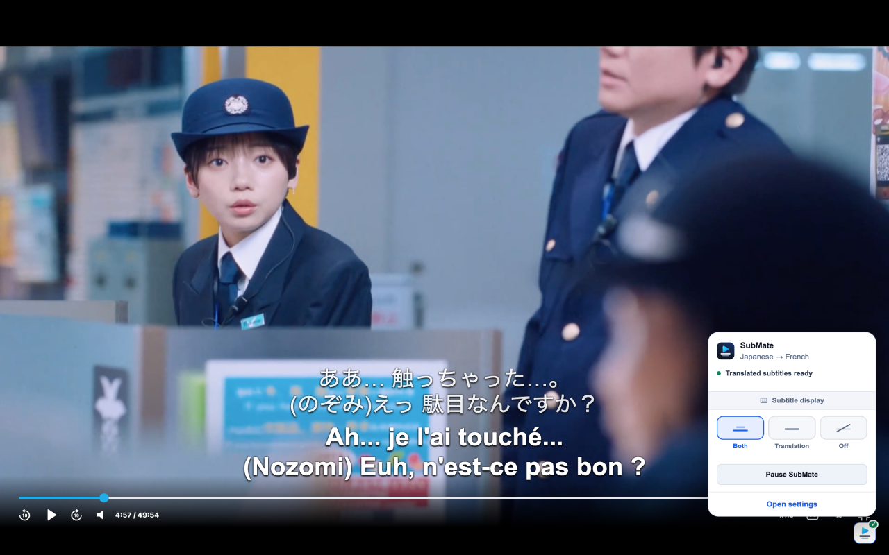
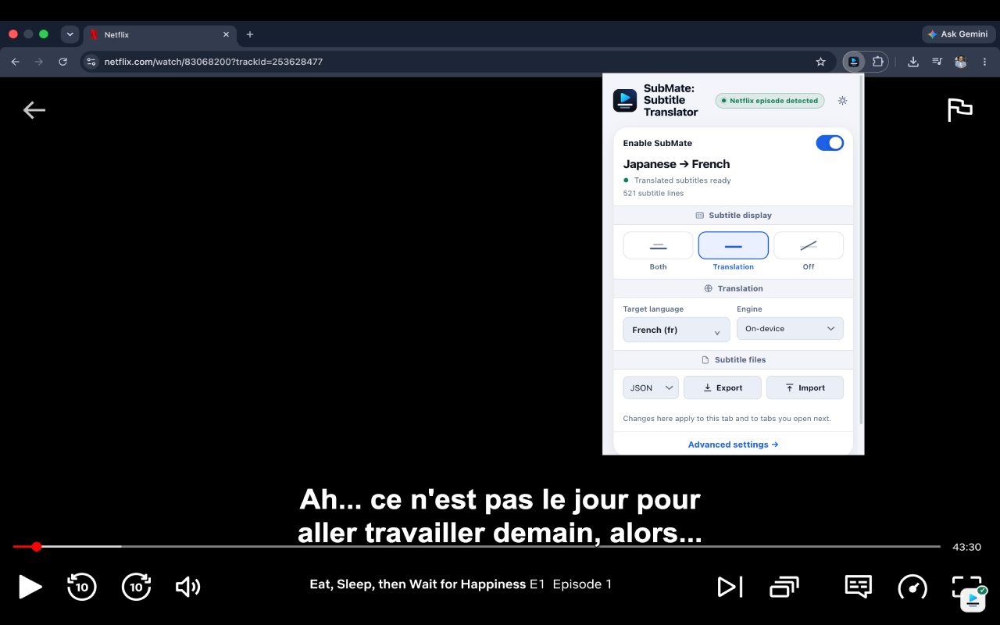
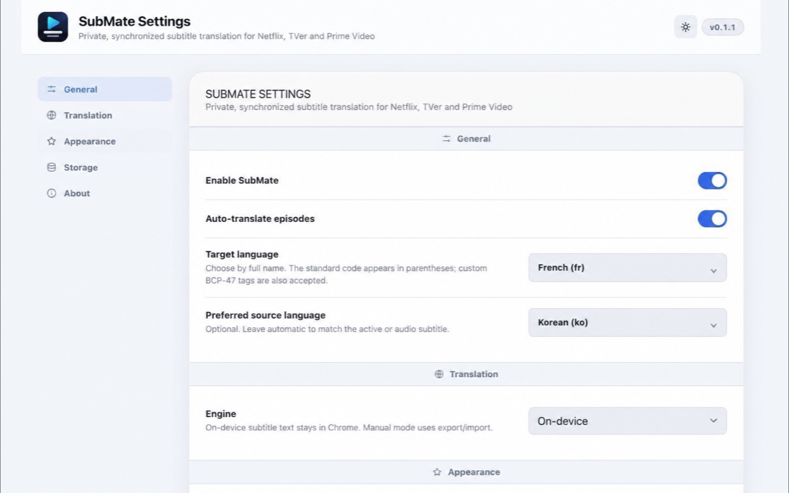

Private by default
On-device translation
Chrome's built-in Translator API keeps subtitle text in your browser when the language pair is supported.
SubMate translates text subtitles in sync with Netflix, TVer, and Prime Video. Its default engine works on-device, with no account, analytics, or SubMate server.
See the in-player overlay, manage subtitle translation from the popup, then tune languages, appearance, and local storage in the full settings page.



SubMate reads supported text tracks, keeps original cue timing, and draws a fullscreen-aware overlay above the player. Choose bilingual, translation-only, or off whenever you need it.
Chrome's built-in Translator API keeps subtitle text in your browser when the language pair is supported.
Timing, caching, fullscreen behavior, language direction, and player controls are handled as one experience.
Bring your own provider key for context-aware cloud translation. It is off until you explicitly enable it.
You need an active service subscription and a title with a text subtitle track. Image-based subtitles cannot be translated.
SubMate is a Manifest V3 extension released under the MIT License. Read the implementation notes, report issues, or help make subtitles more accessible across languages.